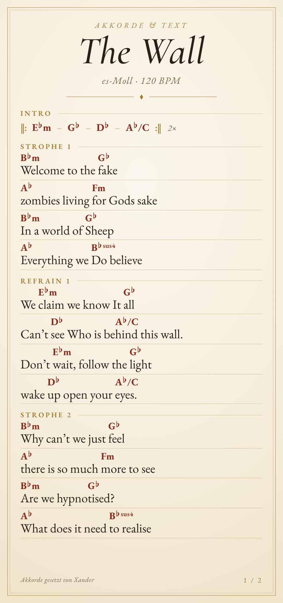

Stand 23.11.2026 · „Laden“ speichert die Datei (in Safari: lange drücken → „Verknüpfte Datei laden“).
Jede Zeile ist der ganze Song (Club-Master). Neueste oben. Es spielt immer nur eine.
Die Terz drunter läuft nur noch in den Ab/C-Takten (Reibung 22 % → 3 %).
Dein Gegengesang steht im Fokus. Er ist die lauteste Begleitstimme, 5,5 dB unter dem Lead (v8: −12 dB).
Dazu kommen zwei leicht verstimmte Kopien links und rechts für die Breite.
Das Doppel ist sauberer. Die meisten Stellen, an denen es einen Halbton unter dir lag, sind korrigiert. Bei gehaltenen Tönen singt es jetzt zu 92 % dieselben Töne wie du (vorher 80 %); einen Halbton tiefer liegt es noch bei 7 % (vorher 19 %), u. a. kurz bei 1:30,9 („open your eyes“ in R1), leise bei −11 dB. Das Doppel läuft nur noch in den Refrains.
Die Vocals sind weniger komprimiert und getrennt bearbeitet. Lead, Gegengesang und Chor haben je eine eigene Kette.
Die Silben unterscheiden sich wieder stärker: 7,6 dB statt 6,5 dB.
Der Hall ist anders aufgebaut. Die Menge war nie das Problem, sondern die Form.
Chor und Gegengesang teilen sich eine Plate (2,2 s), statt dass jede Spur einen eigenen Raum hat.
Der Refrain ist größer, und du führst. Er ist breiter: Side/Mid −10,2 dB statt −12,5 dB.
Wenn du singst, wird der Chor zwischen 1 und 4 kHz bis zu 2 dB leiser.
„Siehst du mich nicht“ läuft allein. Von 217,8 bis 221,6 s sind alle Begleitstimmen stumm. Der Lead hat dort kein Delay und weniger Hall.
„Eyes“ ist nicht mehr messbar: v10 −3 dB, v11 −19,6 dB, v12 −18,7 dB. Das entspricht der reinen Sprechstimme.
Sonst bleibt alles wie in v11.
Hörvergleich: VERGLEICH-v11-v12.mp3 wechselt alle 16 Sekunden. 1 Piep = v11, 2 Pieps = v12.
Noch nicht mit Ohren geprüft – alles gemessen. Bitte zuerst den Vergleich hören.
Wie sich die 18 Stimmen zusammensetzen, ist nirgends festgehalten. Die Bau-Skripte von v9 bis v11 sind verloren.
Erhalten sind 6 Begleitspuren. Daraus wurden alle Chöre von v8 bis v11 gebaut.
Am wahrscheinlichsten ist diese Rechnung: - In v9 lagen 6 Spuren in je 3 Kopien (links, Mitte, rechts). Das ergibt 18. - v10 und v11 hatten laut Notiz „2 Terzen aus der Hauptstimme + Gegengesang, nur Refrains“. - In v11 war der Chor etwa 3 dB leiser und deutlich schmaler als in v10.
Echte Quinten- oder Oktavspuren gab es nie. Quarten und Quinten kamen nur aus deinem Gegengesang.
Gemessen in Refrain 1 bis 3, gezählt sind Töne ab 120 ms. Reibung heißt: Der Ton liegt einen Halbton neben einem Akkordton oder einen Tritonus vom Lead entfernt.
| Stimme | Quelle | Intervall zum Lead | Reibung vorher | v12 | Pegel v12 zum Lead | Reibung v12 |
|---|---|---|---|---|---|---|
| Lead | du, v11-Fassung (gereinigt, „open your eyes“ entfernt) | – | 4 % (Gleittöne) | bleibt, deutlich weniger komprimiert | 0 dB | – |
| Gegengesang | du | Quinte drunter 37 %, Quarte drunter 27 % (eigene Melodie) | 20 % gegen den Akkord, 23 % der Töne zwischen zwei Halbtönen | Fokus. Jeder Ton auf deinen eigenen Halbton gestimmt. Nur leiterfremde Töne (D, A, B, E) gehen auf den nächsten Akkordton, in R1 sind das 4 von 31 | −5,5 dB (v8: −12 dB) | 8 % (deine Durchgangstöne, z. B. C über Db) |
| Gegengesang-Kopien | Kopie davon, ±8 Cent, 15/22 ms versetzt | wie Gegengesang | – | neu, je eine links und rechts | je −13,5 dB | – |
| Doppel | du, zweite Aufnahme | Prim 85 %, 14 % einen Halbton tiefer | 13,5 % gegen den Lead | bleibt, korrigiert: 7 Töne um einen Halbton, 55 um einige Cent, 7 stumm. Nur in Refrains, Tag und Outro | −11 dB | gehaltene Töne: 92 % gleich, 7 % einen Halbton tiefer (gemessen in der Prüfung) |
| Terz drüber | aus deinem Lead errechnet (PSOLA) | parallele Terz drüber | 28 % | wird zur Oberstimme: Terz, wo sie zum Akkord passt (74 %), sonst Quarte drüber (27 %) | je −15,5 dB, links und rechts (rechts leicht verstimmt) | 2,4 % |
| Terz drunter | aus deinem Lead errechnet | parallele Terz drunter | 22 % | nur noch in den Ab/C-Takten, sonst weg (liegt dort, wo dein Gegengesang singt) | −18 dB | 3 % |
| KI-Terz drüber | fremde KI-Stimme, R2/R3 kopiert | Terz drüber | 32 % | weg | – | – |
| KI-Terz drunter | fremde KI-Stimme | Terz drunter | 25 % | weg | – | – |
Warum es gerieben hat: Deine Melodie liegt zu 35 % auf Ab. Über Ebm, Gb und Db ist Ab kein Akkordton, sondern ein sus4 bzw. add9. Jede parallele Terz dazu landet auf C oder F, und das liegt einen Halbton neben einem Akkordton.
Die Dissonanzen kamen also von den maschinellen Terzen und nicht von deinem Gegengesang.
In v12 singt die Oberstimme über solchen Tönen den Akkordton (Db oder Eb). Das ist eine Quarte über dir.
v12 hat 8 Spuren statt 18. Musikalisch sind es drei Stimmen: - dein Lead, dazu das Doppel, - dein Gegengesang, dazu zwei Kopien für die Breite, - die Oberstimme, dazu eine kleine Unterstimme in den Ab/C-Takten.
Alle Begleitstimmen zusammen liegen etwa 4 dB unter dem Lead (ohne Doppel gerechnet). Der Refrain ist breiter als in v11: Side/Mid −10,2 dB statt −12,5 dB.
So hat man es gemacht (Def Leppard mit Mutt Lange, Bon Jovi, Journey): - wenige Stimmen, die zum Akkord passen: Unisono, Terz oder Quinte im Akkord, Oktave, - jede davon von echten Sängern vielfach gesungen, oft 10 bis 20 Spuren und mehr, - Breite durch ADT oder Micro-Pitch (Eventide H910/H3000), - der Chor-Bus hart komprimiert und in einer gemeinsamen Plate, - der Lead trockener und vorn.
Bewertung von v11: 18 Spuren wären für die 80er nicht ungewöhnlich gewesen. Falsch waren drei Dinge: - die Noten: parallele Terzen über sus- und add9-Akkorden, - doppelte Aufgaben: zwei Terz-Paare und eine fremde KI-Stimmfarbe, - jede Spur mit eigenem Raum.
Bewertung von v12: Vom Prinzip her passt v12 dazu: - die Töne passen zum Akkord, - ein gemeinsamer Hall für den Chor (Plate 2,2 s), - Bus-Kompression, - der Lead trockener und vorn.
Was noch fehlt: Ober- und Unterstimme sind aus deinem Lead errechnet und nicht eigens gesungen. Darum klingen sie enger am Lead, als es echtes 80er-Stacking täte.
Der nächste echte Schritt wäre: Du singst die Oberstimme selbst, zwei- bis viermal. Die Noten dafür habe ich je Ton aufgeschrieben – sag Bescheid, dann bekommst du sie als Notenblatt.
Eine Oktave tiefer unter dem Lead (bei −18 dB) habe ich nur als Idee notiert und nicht eingebaut.
Alle Stimmen kommen jetzt aus den trockenen Aufnahmen, jeder Effekt wirkt nur einmal, und Slap House ist raus.
Die übrig gebliebene Zeile kurz vor der Sprechstelle (bei 3:38) ist ganz weg, der Atmer davor ist leiser, und diese Sprechstelle ist nicht mehr lauter als die anderen.
Deine eigene zweite Stimme singt wieder deine Töne: Nur 4 von 89 liegen anders (vorher 38), weil du dort genau zwischen zwei Tönen warst.
Die Terzen richten sich nach dem Akkord; insgesamt reiben nur noch 26 statt 78 Töne, fast nur dort, wo deine zweite Stimme kurz zwischen zwei Tönen liegt.
Noch nicht mit Ohren geprüft: Bitte zuerst den Vergleich hören.
